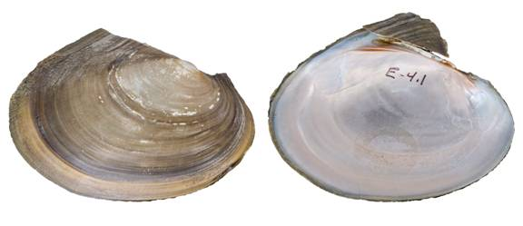

Potamilus ohiensis (Rafinesque, 1820)
Pink Papershell

Potamilus ohiensis – Red River [Red River drainage], length 82.8 mm.
Identification
Shell structure: thin, brittle, and somewhat compressed.
Shell outline: elliptical to oval, often with a well-developed dorsal wing, which can be missing due to erosion or breakage.
Posterior ridge: low and rounded or absent.
Shell color: greenish-brown, tan brown, or black, becomes darker with age and coloration may lighten towards the umbo; surface subglossy to glossy.
Rays: usually none but may occasionally present fine rays.
Shell texture: without sculpture.
Umbo: low, broad, slightly elevated above the hinge line; umbo cavity shallow.
Umbo sculpture: absent or fine concentric lines or broken ridges.
Pseudocardinal teeth: triangular, thin, and compressed, 2 in left valve, but posterior tooth may be missing, 1 tooth in the right valve.
Lateral teeth: long, thin, slightly curved, 2 in left valve, 1 in right valve.
Interdentum: moderately long and narrow to almost absent.
Nacre: purple or pink, some individuals may be white to bluish-white, rarely with brassy blotches; iridescent throughout.
Other: sexually dimorphic but often difficult to separate, females are slightly fuller along the posterior ventral margin.
General range
Mississippi River basin from Louisiana north to Minnesota and Wisconsin and west to north Texas and western Oklahoma, Kansas and North Dakota.
Habitat
Medium-sized streams to rivers, oxbows, lakes, and reservoirs. Primarily occurs in still to slow currents in mud and sand substrates but occasionally found in moderate current with rocky substrate.
Legal listing status
USFWS: None